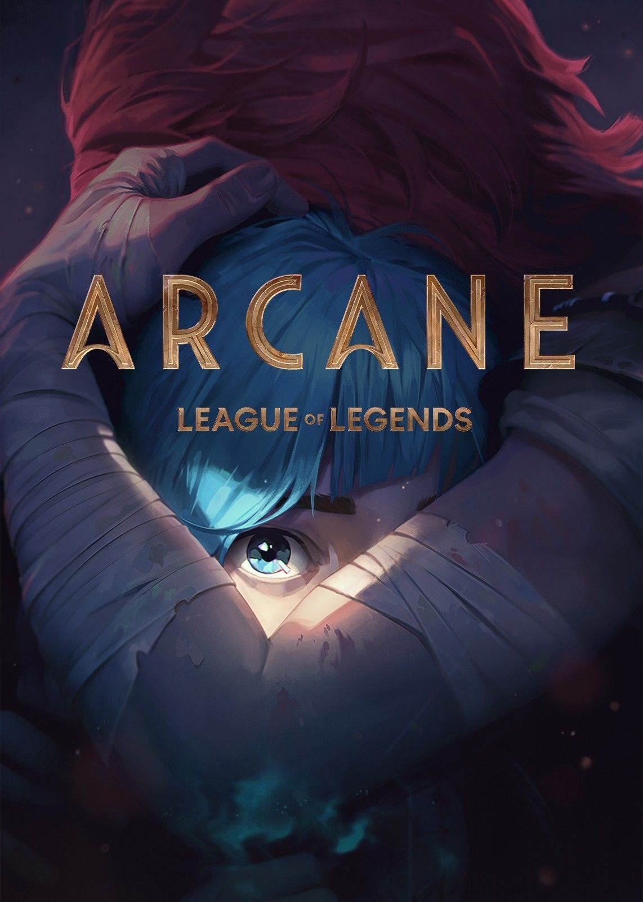
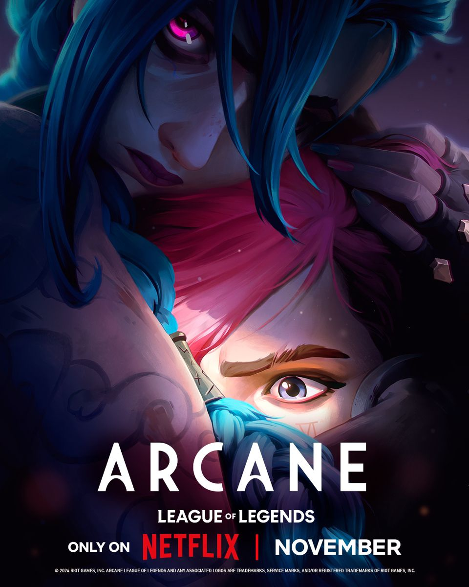
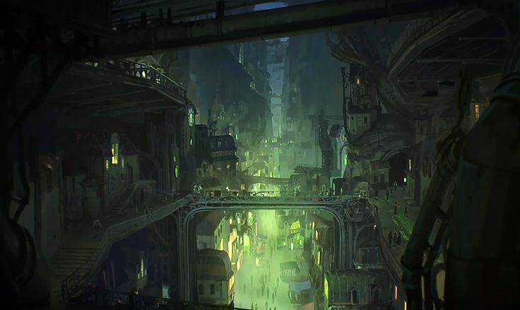
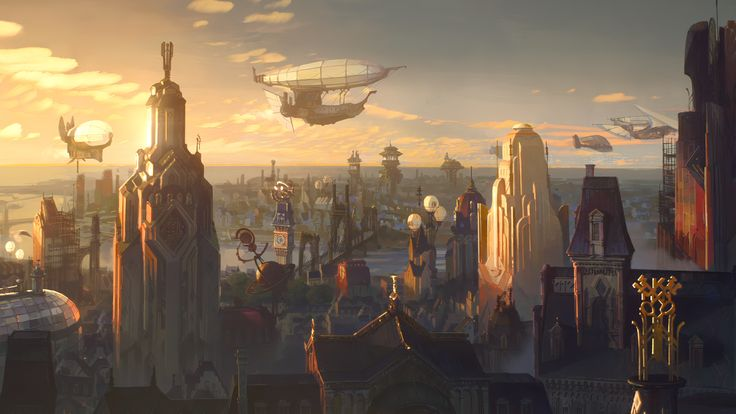

Qué es Arcane


Arcane es una serie de animación basada en el universo de League of Legends. Creada por Riot Games y Fortiche Production, la serie se centra en la precaria relación entre la rica y utópica ciudad de Piltover y el oscuro y oprimido submundo de Zaun.
La historia sigue a las hermanas Vi y Jinx, explorando su crecimiento y los eventos que las separan. La serie es aclamada por su impresionante estilo de animación, su compleja narrativa y el desarrollo profundo de sus personajes.
Arcane ha sido elogiada tanto por los fanáticos de League of Legends como por nuevos espectadores por su capacidad de contar una historia cautivadora y accesible, lo que la convierte en un hito en la adaptación de videojuegos a la pantalla.
Ciudades


Piltover y Zaun son dos ciudades gemelas, unidas por la geografía pero divididas por la sociedad y la ideología. Piltover, la ciudad del progreso, se alza hacia el cielo con su vibrante cultura Hextech, mientras que Zaun, la ciudad subterránea, bulle con una energía cruda y peligrosos experimentos quimtech.
Ambas tienen una historia rica y compleja, donde la ambición, la innovación y la lucha por la supervivencia dan forma a sus habitantes.
Piltover: La Ciudad del Progreso
Conocida como la Ciudad del Progreso, Piltover es un centro de cultura, comercio e innovación. Es famosa por sus grandes universidades y la proliferación de la tecnología Hextech, que combina magia y ciencia. La ciudad es un faro de oportunidad para inventores y artistas, aunque su riqueza y progreso a menudo se construyen sobre la explotación de los recursos y la mano de obra de su hermana subterránea, Zaun.
Zaun: La Ciudad Subterránea
Ubicada en los cañones debajo de Piltover, Zaun es una ciudad oscura y bulliciosa, un laberinto de industrias, laboratorios clandestinos y una vibrante subcultura. A pesar de su reputación de peligrosa, Zaun es un lugar de innovación audaz, donde la quimtecología florece y la libertad, aunque caótica, es muy valorada. Es el hogar de muchos que han sido oprimidos o ignorados por Piltover, forjando su propio destino en la penumbra.
La relación entre Piltover y Zaun es tensa y compleja, una constante lucha de clases y poder que define la narrativa de Arcane.
Personajes Icónicos
Bookart
El bookart de Arcane es interesante porque recorre el diseño de los personajes y su desarrollo a lo largo de la serie, explorando sus variantes
A continuación podrá acceder al bookart
Foro
En este espacio los invito a que compartan sus pensamientos acerca de la página y la serie si es que así lo desean
Comparte tu opinión
Sobre mí
"But amidist so many chaos, we find some light. Worth fighting, worth gaining for"